- NOWPAIN Clinic
- janice-lok/ui-nowpain
Construct and stylize a user-friendly locally-hosted website for clinic receptionists to update patient information and book appointments.
- CSS
- HTML
- Javascript
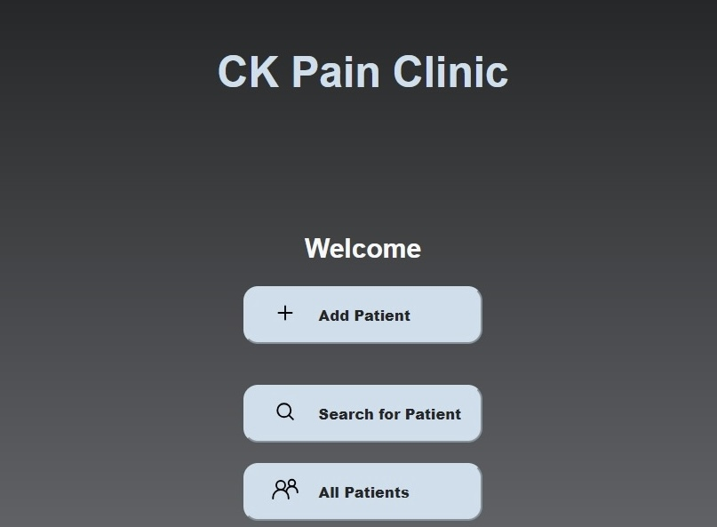
an aspiring front-end developer.
Construct and stylize a user-friendly locally-hosted website for clinic receptionists to update patient information and book appointments.
Built and styled a personal website (the one you're browsing right now!) to showcase professional strengths and coding projects.
Designed an application package, including both a user interface and block diagram, that rapidly and accurately simulated performance curves for an existing control system. Tested and debugged through two case studies.
Automated data compression analysis of sets of 100 PI tags; replicated swinging door algorithm in Python, improving analysis efficiency while maintaining accuracy.
 Python
Python HTML
HTML CSS
CSS Javascript
Javascript SQL
SQL React.js
React.js Git
GitAs a recent graduate from NYU with a background in chemical engineering and past internship experience in data management, there are many soft skills that I bring with me to the tech industry:
As chemical engineering is also a highly collaborative field, I have frequently worked with a vast range of people, from peers to superiors, to tackle problems and deliver quality solutions, not only in coursework but also in internship and research experiences.
Chemical engineering has given me the perspective of seeing things as (often complex) systems. As a result, I am well-conditioned in defining and understanding problems, thinking logically and structurally through them, and developing effective solutions.
During my time at NYU, I took a writing course for engineers where I first learned about (and practiced) communicating technical topics to a lay audience through mediums such as video abstracts, popular science articles, etc.
As my internship focused on data management, I have exposure to managing workflow in an Agile environment, using tools such as Kanban boards and participating in daily stand-up meetings.
In addition to using MS Office Suite during my internship, I have worked with a variety of technologies and programs (i.e. MATLAB, Aspen) to aid problem-solving for chemical engineering applications.
As managing deadlines and multiple projects/tasks have inevitably been a part of my academic studies and internship work, time management and workload prioritization are valuable skills that I have honed over the course of my undergraduate career.
Hi there, welcome to my website! I'm Janice Lok, an aspiring
front-end developer based in New York City.
I'm excited about front-end development because of the opportunity to not only work on real-world applications
with my detailed and structured approach, but also to create visual, user-friendly products as a highly visual person.
I graduated from NYU with a background in chemical engineering.
My hobbies include playing volleyball, weightlifting, and photography. (See more below!)
Check out these photos I took with my camera when I was traveling in San Francisco (2022) and Japan (2023)!
 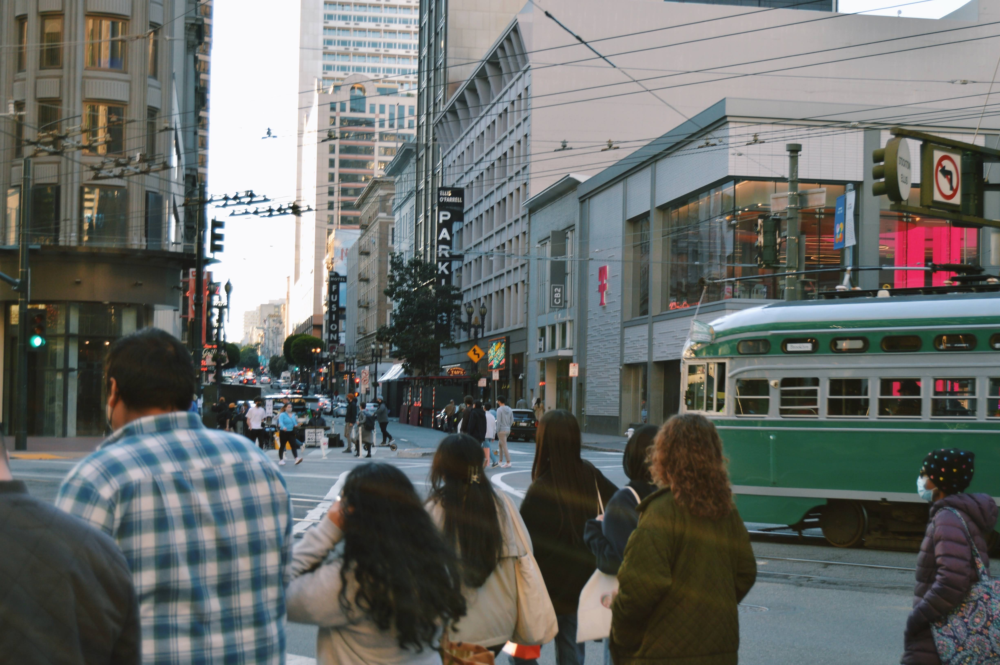
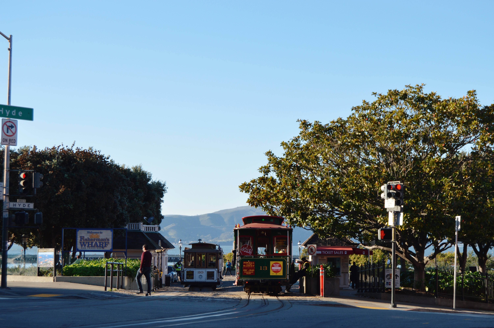
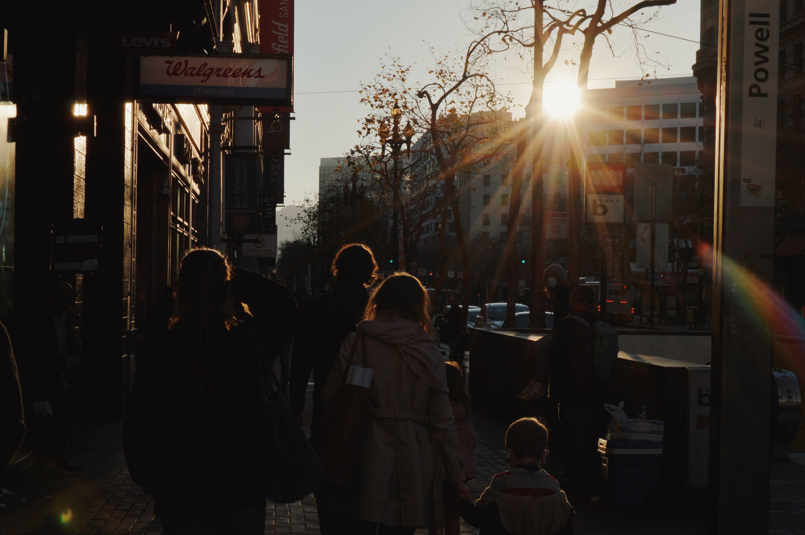
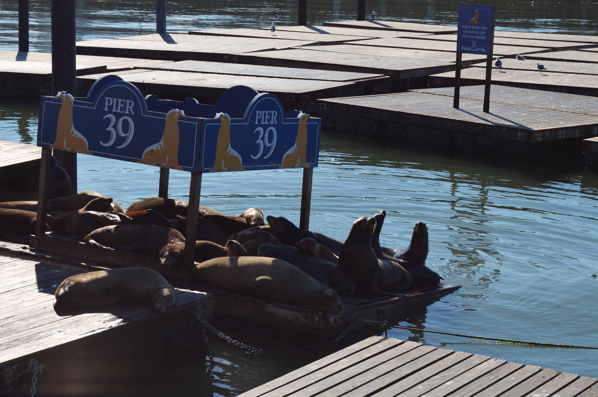
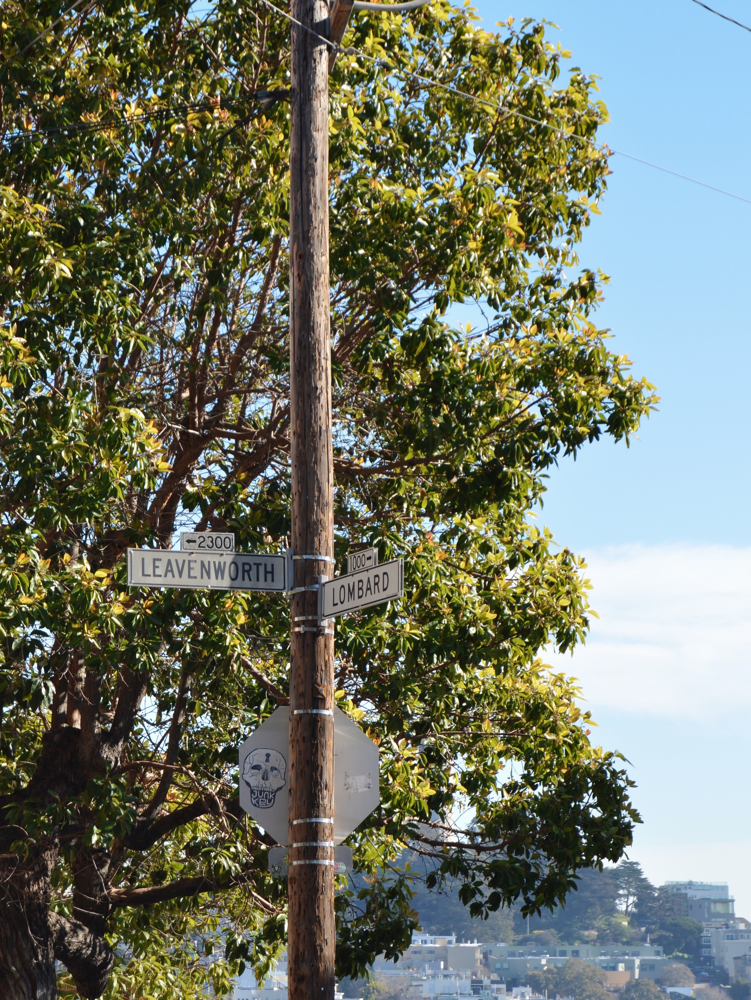
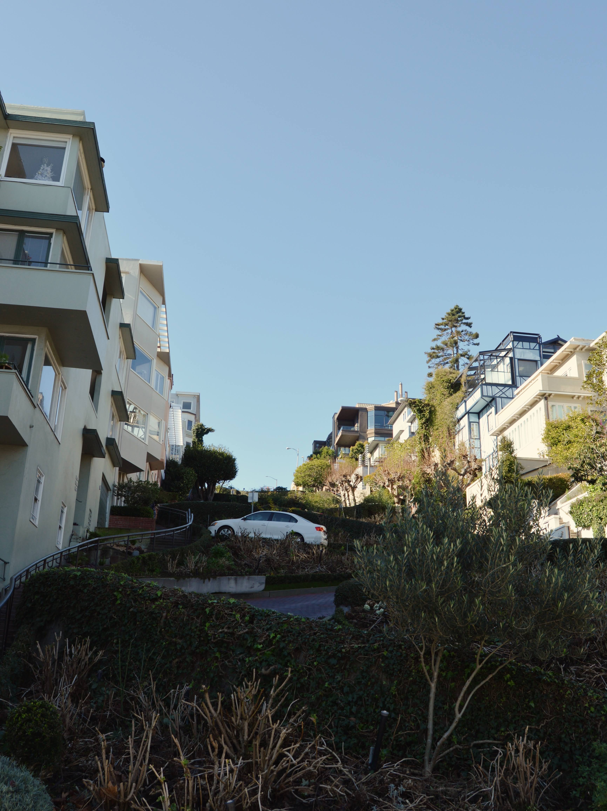
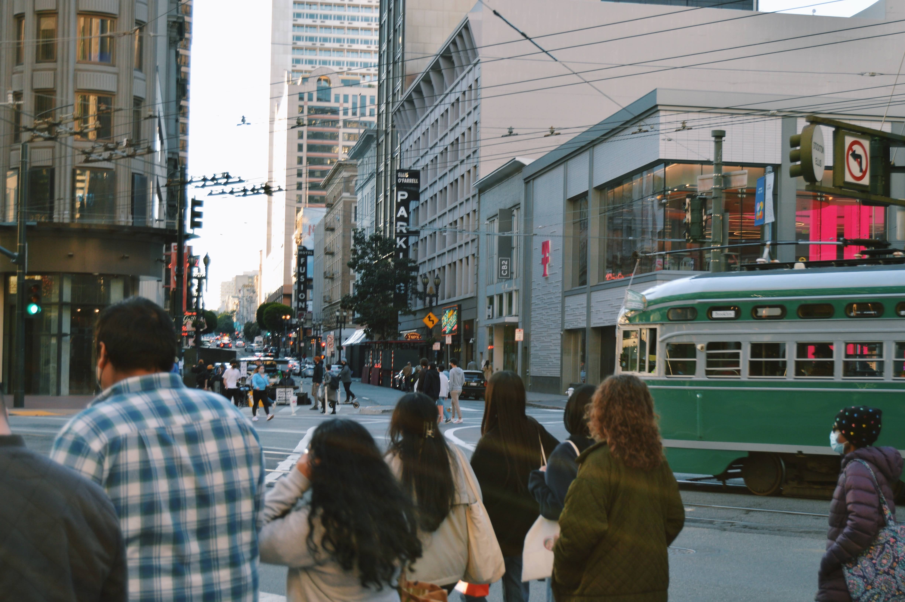
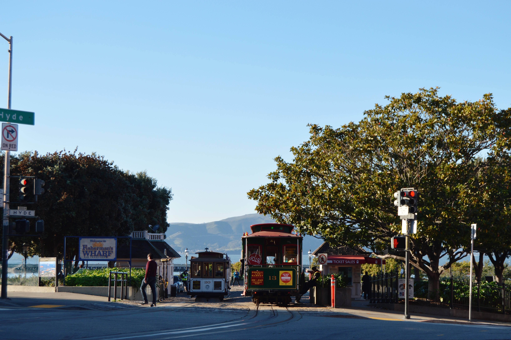
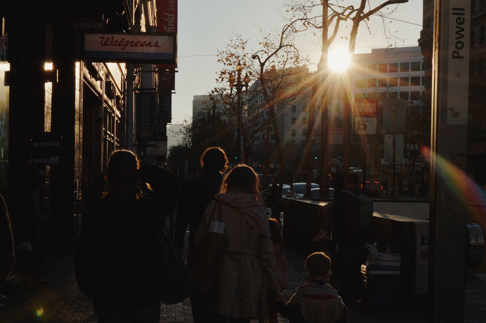
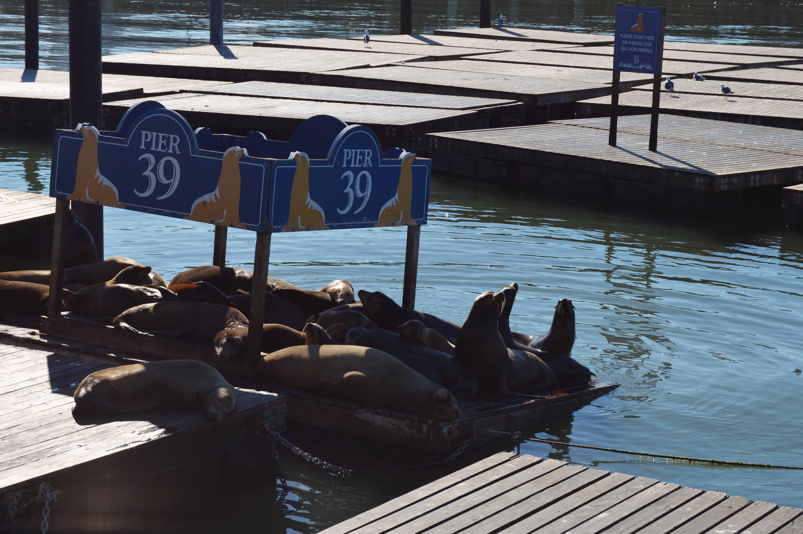
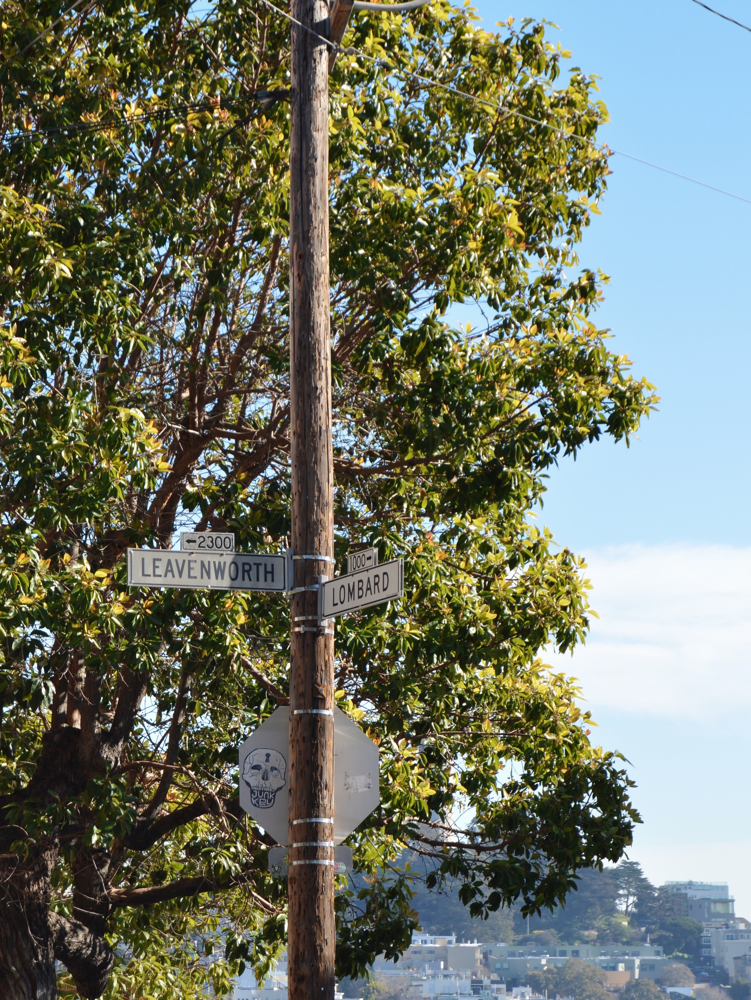
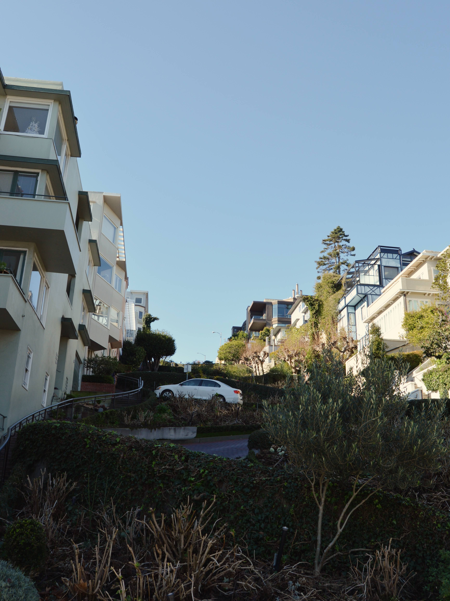
And here's a picture (taken on a friend's film camera) of me and my friends playing grass volleyball during the summer season.